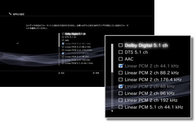

音声出力設定
PS3™の音声出力を設定します。主に、ホームシアター用のAVアンプなど、デジタル音声出力に対応したオーディオ機器を接続したときに設定します。
1. |
お使いのオーディオ機器の対応フォーマットを確認する。 |
|||||||||||||||||||||||
|---|---|---|---|---|---|---|---|---|---|---|---|---|---|---|---|---|---|---|---|---|---|---|---|---|
2. |
|
|||||||||||||||||||||||
3. |
［音声出力設定］を選ぶ。 |
|||||||||||||||||||||||
4. |
オーディオ機器側の入力端子を選ぶ。
|
|||||||||||||||||||||||
5. |
音声出力フォーマットを選ぶ。  |
|||||||||||||||||||||||
6. |
設定内容を確認する。
|
|||||||||||||||||||||||
7. |
設定内容を保存する。 |
|||||||||||||||||||||||

 を押すと、前の画面に戻って設定をやり直すことができます。
を押すと、前の画面に戻って設定をやり直すことができます。
ヒント
- お買い上げ時の設定では、すべての出力端子から［Linear PCM 2ch］の音声を出力するように設定されています。音声出力設定を変更すると、設定したいずれかの端子からだけ音声が出力されるようになります。
- 音声出力設定を変更した場合、複数の出力端子から同時に音声を出力することはできません。例えば、PS3™とテレビをHDMIケーブルで接続し、PS3™とオーディオ機器を光デジタルケーブルで接続して［音声出力設定］を［光デジタル］に切りかえたときは、テレビからは音が出なくなります。テレビから音を出したいときは、設定を［HDMI］に切りかえるか、
 （設定）＞
（設定）＞ （サウンド設定）＞［音声同時出力］を［入］に設定してください。
（サウンド設定）＞［音声同時出力］を［入］に設定してください。 - 手順5で［Linear PCM 2ch 88.2 kHz］や［Linear PCM 2ch 176.4 kHz］を選ぶと、オーディオ機器によっては音が途切れたり、音が出なくなったりすることがあります。
- HDMIケーブルを使っているときは、PlayStation®2 / PlayStation®規格ソフトウェアからは［Linear PCM 2ch］の音声だけしか出力できません。Dolby DigitalやDTSの音声を出力するには、PS3™とオーディオ機器を光デジタルケーブルで接続して、［音声出力設定］を［光デジタル］に切りかえてください。
- HDCP（High-bandwidth Digital Content Protection）規格に対応していない機器をHDMIケーブルで接続すると、PS3™からの映像および音声を出力できません。
重要
- PS3™では、一部のPlayStation®2およびPlayStation®規格ソフトウェアが、従来のPlayStation®2およびPlayStation®と異なる動作をする場合や、適切に動作しない場合があります。
- また、一部のPS3™では、PlayStation®2規格ソフトウェアの再生に対応していません。詳しくは［再生できるディスクの種類について］、各地域のWebサイト、または製品同梱の取扱説明書をご覧ください。